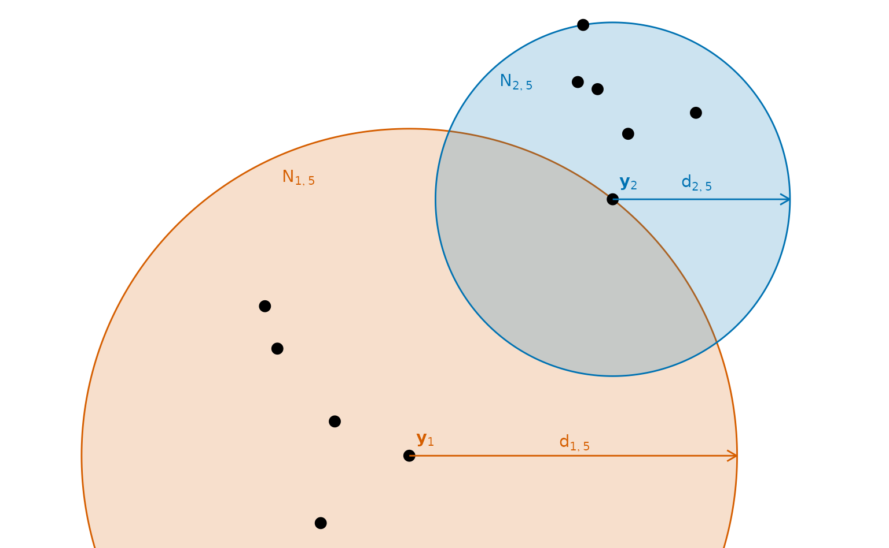
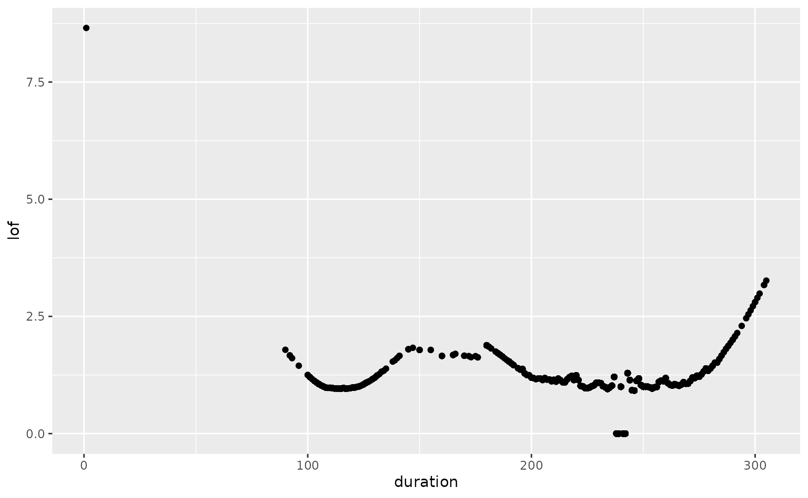

Distance-based anomaly detection methods are based on the distances between observations. The pairwise distances between observations are computed, and anomalies are identified as those observations that are far from other observations.
Before we discuss some of the methods that fall into this class of algorithms, we will first discuss some of the different ways of measuring distances between observations.
7.1 Multivariate pairwise distances
Suppose our observations are denoted by \bm{y}_1,\dots,\bm{y}_n. In univariate data, the distance between any two observations is simply the absolute difference between the points. But in multivariate data, there are many different ways of measuring distances between observations, even when the data are all numerical.
Euclidean distance
Perhaps the most obvious way to define the distance between any two points \bm{y}_i and \bm{y}_j is to measure the length of the straight line between the points. This is commonly known as Euclidean distance, named after the famous Greek mathematician Euclid, and can be defined as \|\bm{y}_i - \bm{y}_j\|_2 = \sqrt{\sum_{k=1}^d (y_{ik}-y_{jk})^2}. This is also known as the L_2 distance. For d=1 or d=2, this is the physical distance between the points when plotted on a strip plot or a scatterplot (provided there is no jittering used).
The dist() function will return a distance matrix containing all pairwise distances between observations. The argument method specifies the type of distance to compute, with the default being Euclidean distance.
Here is an example using only the first five observations of the old_faithful data set (omitting the time stamp). Because the distances are symmetric, only the lower triangle of the matrix is computed.
The Manhattan distance (or absolute distance) between two observations is given by \|\bm{y}_i - \bm{y}_j\|_1 = \sum_{k=1}^d |y_{ik}-y_{jk}|. This is also known as the L_1 distance. It is called the Manhattan distance as it gives the shortest path between the corners of city blocks (denoted as points on a grid) when those blocks are rectangular, as they mostly are in Manhattan. For the same reason, it is also sometimes called the “taxicab” distance or the “city block” distance.
Let’s compute the Manhattan distances for the same five observations from the oldfaithful data set.
This generalizes the Manhattan and Euclidean distances to use powers of p to define the L_p distance: \|\bm{y}_i - \bm{y}_j\|_p = \left(\sum_{k=1}^d (y_{ik}-y_{jk})^p\right)^{1/p}. It is named after the German mathematician, Hermann Minkowski. When p=1 this is the Manhattan distance, and when p=2 this is the Euclidean distance.
Here is the Minkowsi distance with p = 3 for the same five observations from the oldfaithful data set.
The maximum distance between any components of \bm{y}_i and \bm{y}_j is known as the Chebyshev distance (after the Russian mathematician, Pafnuty Chebyshev), given by \|\bm{y}_i - \bm{y}_j\|_{\text{max}} = \max_k |y_{ik}-y_{jk}|.
This is also known as chessboard distance, as it is the number of moves a king would have to travel on a chessboard to move between two squares. The Chebyshev distance is equivalent to the Minkowski distance with p=\infty.
Notice that all four of the distances introduced so far are equal to the absolute difference between observations when d=1. The next distance does not have this property.
Mahalanobis distance
When the variables have different scales, the variables with the largest ranges will dominate the distance measures. In the Old Faithful example, durations are much longer than waiting times, and so the duration variable is dominating the calculation of distances. Consequently, it is often preferable to scale the data before computing distances.
Suppose we scale the data using the robust multivariate approach described in Section 3.9, so that the scaled data are given by \bm{z}_i = \bm{U} (\bm{y}_i - \bm{m}), where \bm{m} is the pointwise median, and \bm{U}'\bm{U} = \bm{S}_{\text{OGK}}^{-1} is the Cholesky decomposition of the inverse of \bm{S}_{\text{OGK}}, a robust estimate of the covariance matrix of the data. Then the Euclidean distance between \bm{z}_i and \bm{z}_j is given by
\| \bm{z}_i - \bm{z}_j\|_2 = \sqrt{(\bm{y}_i - \bm{y}_j)' \bm{U}' \bm{U} (\bm{y}_i - \bm{y}_j)} = \sqrt{(\bm{y}_i - \bm{y}_j)' \bm{S}_{\text{OGK}}^{-1} (\bm{y}_i - \bm{y}_j)}
This is known as the Mahalanobis distance, named after the Indian statistician Prasanta Chandra Mahalanobis (although he wasn’t using a robust measure of covariance). It is a multivariate generalization of the number of standard deviations between any two observations.
Mahalanobis distance is not an option provided by the dist() function, so we will need to compute the scaled data first.
z <- oldfaithful |>select(-time) |>mvscale()z |>head(5) |>dist()
For more information about pairwise distances, see Borg and Groenen (2005).
7.2 Nearest neighbours
If there are n observations, then there are n(n-1)/2 pairwise distances to compute, so this is an O(n^2) operation which can take a long time for large n.
Some algorithms only compute the pairwise distances of the k nearest observations, although finding those observations requires some additional distances to be computed. For some types of distances, efficient solutions are available using kd trees (Bentley 1975; Arya et al. 1998) that find the k nearest neighbours to each observation in O(n\log(n)) time.
The calculation of k nearest neighbours is useful for more than anomaly detection problems. It is also the basis of a popular classification method due to the Berkeley statisticians Evelyn Fix and Joe Hodges (Fix and Hodges 1989) which is often known as the “kNN algorithm”.
Suppose we use the Old Faithful data to find eruptions that are neighbours in the (duration, waiting) space. The dbscan package uses kd trees to quickly identify the k nearest observations to each eruption. We will use the scaled data computed in the last section to find the 5 nearest neighbours to each eruption.
# Find 5 nearest neighbours to each eruptionknn <- dbscan::kNN(z, k =5)# First eruption in the data setoldfaithful[1, ]
For large data sets, approximations are available which speed up the computation even more, but are less accurate in finding the k nearest neighbours. The approx argument specifies a distance tolerance which makes the process faster for large data sets, although the neighbours returned may not be the exact nearest neighbours.
# Find 5 approximate nearest neighbours to each eruptionkann <- dbscan::kNN(z, k =5, approx =2)# Five closest observationsoldfaithful[kann$id[1, ], ]
In this case, the same five observations have been found.
7.3 Local outlier factors
A popular way of using k-nearest neighbours for anomaly detection is via local outlier factors (Breunig et al. 2000). This is similar to the idea discussed in Section 6.5 of finding points with low probability density estimates, in that it is designed to find points in areas with few surrounding observations.
Suppose we write the distance between observations \bm{y}_i and \bm{y}_j as \|\bm{y}_i - \bm{y}_j\|, and let d_{i,k} be the distance between observation \bm{y}_i and its kth nearest neighbour.
Let N_{i,k} be the set of k nearest neighbours within d_{i,k} of \bm{y}_i. (If there are multiple observations all exactly d_{i,k} from \bm{y}_i, then N_{i,k} may contain more than k observations, but we will ignore that issue here.)
Note that an observation \bm{y}_j may be within N_{i,k} while \bm{y}_i does not fall within N_{j,k}, as shown in the diagram below.

Figure 7.1: A synthetic data set of 11 observations. Nearest neighbourhoods containing five observations each are shown for \bm{y}_1 (in orange) and \bm{y}_2 (in blue). The neighbourhood of \bm{y}_1 contains \bm{y}_2 in its nearest five observations, but \bm{y}_2 does not include \bm{y}_1 in its nearest five observations.
Let r_k(i,j) = \max(d_{j,k}, \|\bm{y}_i-\bm{y}_j\|) be the “reachability” of \bm{y}_i from \bm{y}_j. Thus, r_k(i,j) is the distance between observations \bm{y}_i and \bm{y}_j when they are far from each other, but is equal to d_{j,k} if \bm{y}_i is one of the k nearest neighbours of \bm{y}_j. The reachability is a truncated variant of the usual Euclidean distance \|\bm{y}_i-\bm{y}_j\| so that it is not less than d_{j,k}.
The average reachability of \bm{y}_ifrom its nearest neighbours is given by
\bar{r}_{i,k} = k^{-1} \sum_{\bm{y}_j \in N_{i,k}} r_k(i,j)
This is not the same as the average reachability of the neighbours from\bm{y}_i which, by definition, would be d_{i,k}. An observation will have high average reachability if it is far from its neighbours, whereas it will have low average reachability if it has many close neighbours.
Then the local outlier factor for observation \bm{y}_i is given by
\ell_{i,k} = \frac{\bar{r}_{i,k}}{k}\sum_{\bm{y}_j \in N_{i,k}} \bar{r}^{-1}_{j,k}.
Thus, it is the ratio between \bar{r}_{i,k} and the average value of \bar{r}^{-1}_{j,k} for points within its neighbourhood.
This provides a relative measure of the density of each observation compared to its neighbours. An observation is regarded as an anomaly if it is in a low-density region (far from its neighbours) while its neighbours are in higher density regions (with many neighbours nearby). A value of \ell_{i,k} much greater than 1 shows that the observation has much larger average reachability compared to its neighbours, and so is regarded as an anomaly.
One problem with this definition is that \ell_{i,k} can be infinite. If the data set contains at least k+1 identical observations, then the average reachability \bar{r}_k(j,k) will be 0 if \bm{y}_j is one of the group of identical observations. Consequently, \ell_{i,k} = \infty if \bm{y}_i is a neighbour to one of the group of identical observations. In this book we use a slightly different definition from that used elsewhere and replace these infinite values with zeros.
Another problem is that it can be difficult to determine an appropriate value for k.
Example: Old Faithful data
Code
of_scores <- oldfaithful |>mutate(lof =lof_scores(duration, k =150))of_scores |>arrange(desc(lof))
of_scores |>filter(duration <7000) |>ggplot(aes(x = duration, y = lof)) +geom_point()

Figure 7.2: TBC
Again, the two large scores correspond to the extreme 2 hour duration and the tiny 1 second duration. The value of k=150 has been chosen after experimenting with various values.
7.4 Stahel-Donoho outlyingness
The Stahel-Donoho outlyingness is a robust measure of outlyingness
Stahel (1981), Donoho (1982), Brys, Hubert, and Rousseeuw (2005)
Called “density-based”, but “density” here does not mean probability density, as in ch6. Instead, it refers to the relative concentration of points in a neighbourhood.
Arya, S, D M Mount, N S Netanyahu, R Silverman, and A Y Wu. 1998. “An Optimal Algorithm for Approximate Nearest Neighbor Searching Fixed Dimensions.”Journal of the ACM 45 (6): 891–923. https://doi.org/10.1145/293347.293348.
Bentley, J L. 1975. “Multidimensional Binary Search Trees Used for Associative Searching.”Communications of the ACM 18 (9): 509–17. https://doi.org/10.1145/361002.361007.
Billor, N, A S Hadi, and P F Velleman. 2000. “BACON: Blocked Adaptive Computationally Efficient Outlier Nominators.”Computational Statistics & Data Analysis 34 (3): 279–98. https://doi.org/10.1016/S0167-9473(99)00101-2.
Borg, I, and P J F Groenen. 2005. Modern Multidimensional Scaling: Theory and Applications. 2nd ed. Springer Texts in Statistics. New York: Springer. https://doi.org/10.1007/0-387-28981-X.
Breunig, M M, H-P Kriegel, R T Ng, and J Sander. 2000. “LOF: Identifying Density-Based Local Outliers.”ACM SIGMOD Record 29 (2): 93–104. https://doi.org/10.1145/335191.335388.
Brys, G, M Hubert, and P J Rousseeuw. 2005. “A Robustification of Independent Component Analysis.”Journal of Chemometrics 19 (5-7): 364–75. https://doi.org/10.1002/cem.940.
Donoho, D L. 1982. “Breakdown Properties of Multivariate Location Estimators.”
Fix, E, and J L Hodges. 1989. “Discriminatory Analysis — Nonparametric Discrimination: Consistency Properties.”International Statistical Review 57 (3): 238–47.
Liu, F T, K M Ting, and Z-H Zhou. 2008. “Isolation Forest.” In 2008 Eighth IEEE International Conference on Data Mining, 413–22. IEEE. https://doi.org/10.1109/ICDM.2008.17.
Rousseeuw, P J, and K Van Driessen. 1999. “A Fast Algorithm for the Minimum Covariance Determinant Estimator.”Technometrics: A Journal of Statistics for the Physical, Chemical, and Engineering Sciences 41 (3): 212–23. https://doi.org/10.1080/00401706.1999.10485670.
Stahel, W A. 1981. “Robust Estimation: Infinitisimal Optimality and Covariance Matrix Estimators.” PhD, ETH Zurich.
Talagala, P D, R J Hyndman, and K Smith-Miles. 2019. “Anomaly Detection in High Dimensional Data.”arXiv Preprint arXiv. https://arxiv.org/abs/1908.04000.
Wilkinson, L. 2017. “Visualizing Big Data Outliers Through Distributed Aggregation.”IEEE Transactions on Visualization and Computer Graphics, August. https://doi.org/10.1109/TVCG.2017.2744685.